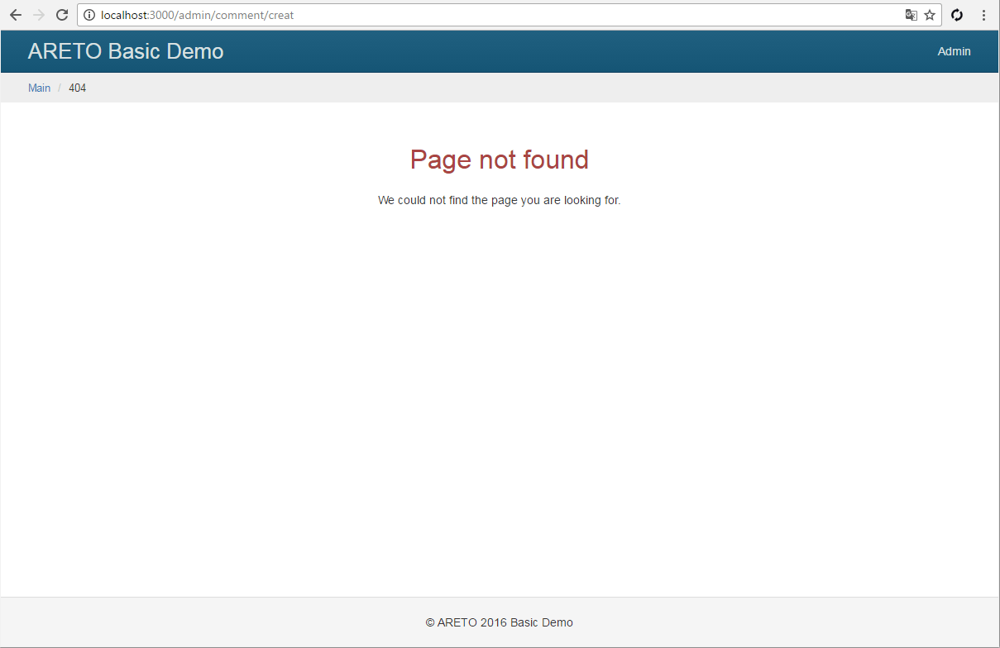
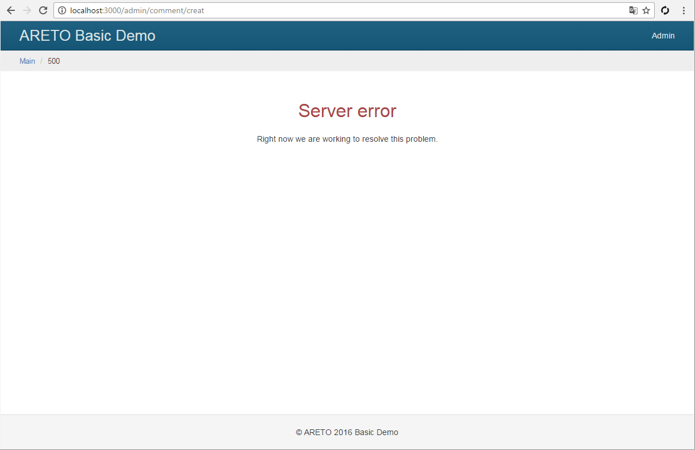

Error handling
Enter in your browser http://localhost:3000/bla-bla-bla
or change value in the this.render("index"') line on a non-existent template.
In each case, you will see how the server reacts to errors.
Capture errors
To intercept and handle exceptions, add a configuration section containing the controller
(by default DefaultController) and an action (by default error).
These parameters provide error handling.
config/default.js
Action on error
Create actionError method in controller. It will be called to handle errors.
controller/DefaultController.js
Error views
Create templates for error status (403, 404, 500). They will be displayed to user.
view/template/default/403.ejs
view/template/default/404.ejs
view/template/default/500.ejs
Now repeat the example from the beginning of the chapter and see how to change the server's response.